1
Preparar VS Code
Abrir el folder de trabajo y acceder a la Command Palette para crear la conexión ABAP.
Ver pasosGuía visual de implementación
Configuración práctica para crear una destination ABAP en VS Code, agregarla al workspace, autenticar la conexión SAP y dejar el entorno listo para trabajar con GitHub Copilot.
Abrir el folder de trabajo y acceder a la Command Palette para crear la conexión ABAP.
Ver pasosSeleccionar HTTP, ingresar la URL SAP y revisar la entrada generada en destinations.json.
Ver pasosAgregar la destination al workspace, hacer logon y cargar paquetes u objetos ABAP.
Ver pasosGuía paso a paso
01Abrir Visual Studio Code y seleccionar el folder donde se va a trabajar con los objetos ABAP.
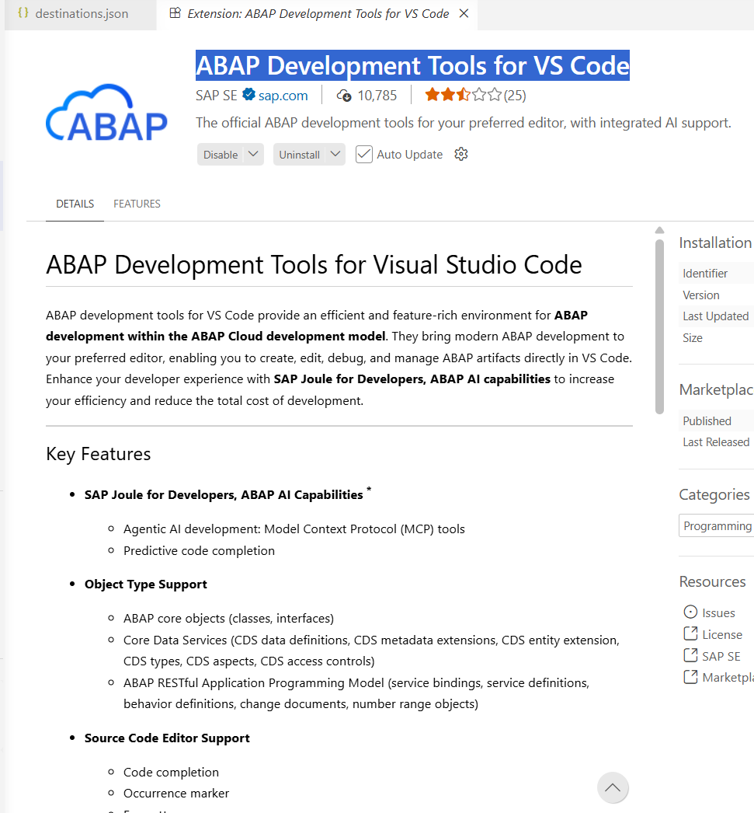
02Abrir el folder desde VS Code para que la configuración quede asociada al workspace correcto.
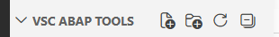
03Desde el menú de VS Code ingresar a View -> Command Palette y ejecutar el comando ABAP: New Destination.
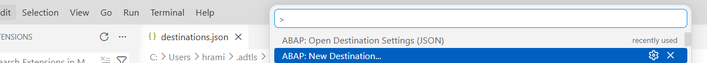
Conexión SAP
01Cuando el asistente pregunte el tipo de conexión, seleccionar HTTP.
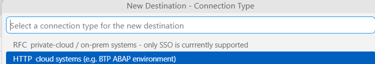
02Ingresar la URL del sistema SAP. En el documento se usa una URL genérica como referencia.
https://xxxxxxxx.sap.xxxxxx.group:44380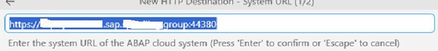
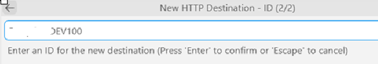
03La acción anterior agrega una entrada en el archivo destinations.json.
04Para revisar el JSON generado, ejecutar el comando ABAP: Open Destination Settings (JSON).
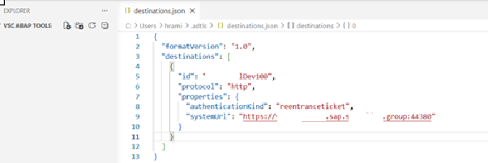
Workspace ABAP
01Para agregar objetos al workspace, ejecutar ABAP: Add Destination as Folder to Workspace y escoger la destination creada.
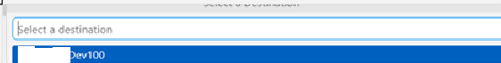
02Después de agregarla, la destination se visualiza en el explorador de VS Code.
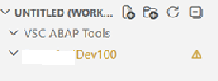
03Si aparece sin conexión, usar la opción Logon to destination.
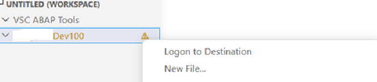
04El logon puede realizarse con cualquiera de las dos opciones disponibles en el flujo mostrado.
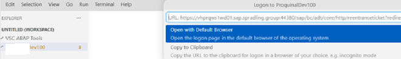
05Al completar el acceso, la destination queda disponible para navegar objetos ABAP.
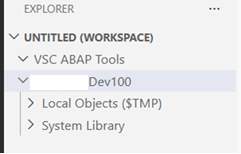
06Estas son algunas opciones que se pueden ejecutar desde la Command Palette para trabajar con objetos y paquetes.
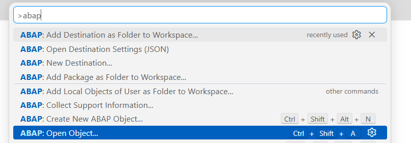
07Para agregar un paquete como carpeta del workspace, ejecutar ABAP: Add Package as Folder to Workspace.
Asistencia IA
01Con la destination ya conectada, abrir GitHub Copilot en VS Code para solicitar ayuda sobre objetos ABAP del workspace.
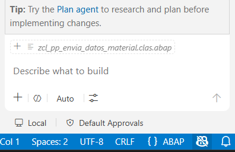
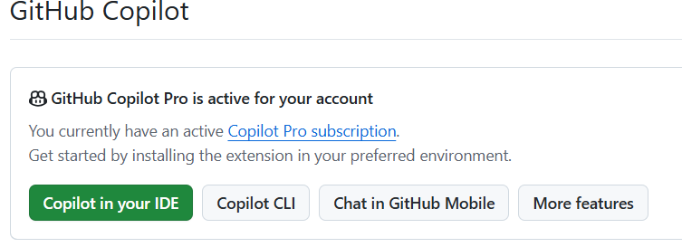
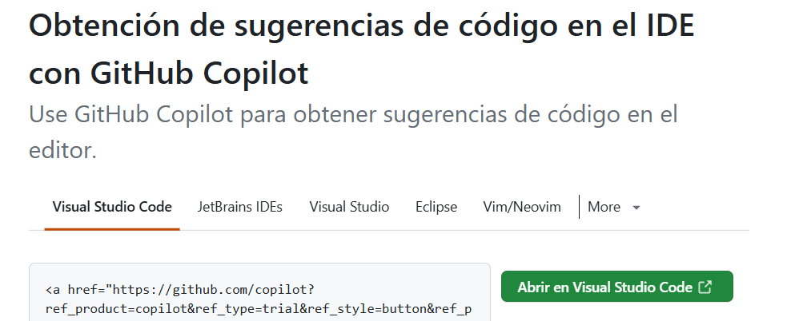
02Con esto ya se pueden mostrar objetos del sistema y generar el prompt que se requiera.
Se puede agregar el paquete desde la Command Palette o mediante prompt. La recomendación práctica es usar la Command Palette cuando sea posible, porque hacerlo por prompt puede consumir muchos tokens.
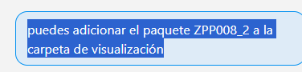
Cierre operativo
01Validar que Git, Node.js y el IDE estén instalados correctamente antes de clonar o preparar repositorios relacionados.
02Ejecutar los comandos de instalación desde la carpeta correcta del proyecto.
03Confirmar que el archivo .env exista en el directorio del repositorio cuando el flujo lo requiera, y que contenga valores válidos para el cliente SAP.
04Verificar conectividad a la URL SAP desde el navegador antes de probar integraciones o asistentes.
05Si el servidor MCP no inicia, revisar la salida de la terminal, reinstalar dependencias con npm install y volver a compilar con npm run build.
06Si la herramienta no puede acceder a SAP, revisar VPN, credenciales, mandante, permisos del usuario y disponibilidad del servicio SAP GUI for HTML o Fiori.
Evitar prompts que soliciten operaciones destructivas sin revisar primero el alcance de la acción.